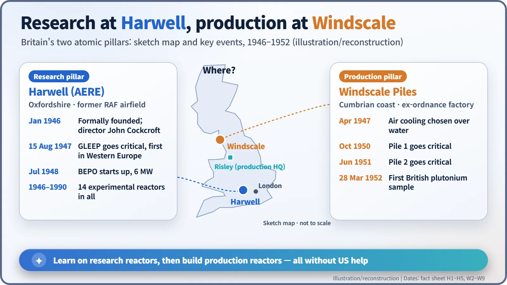
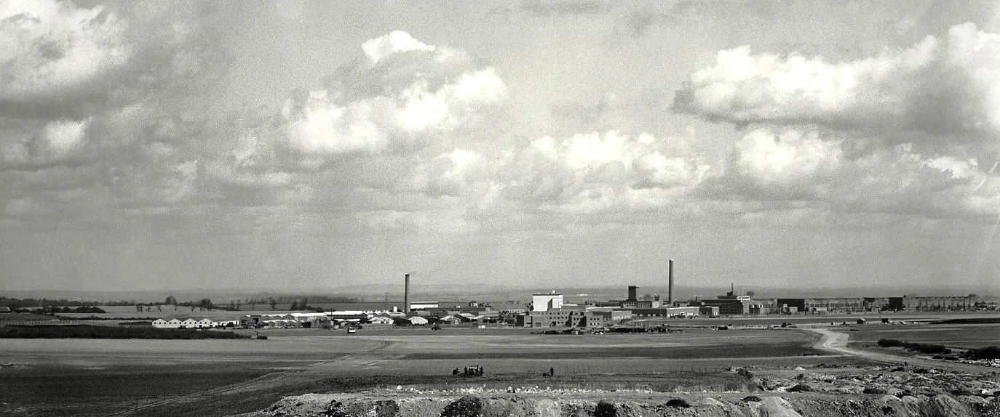
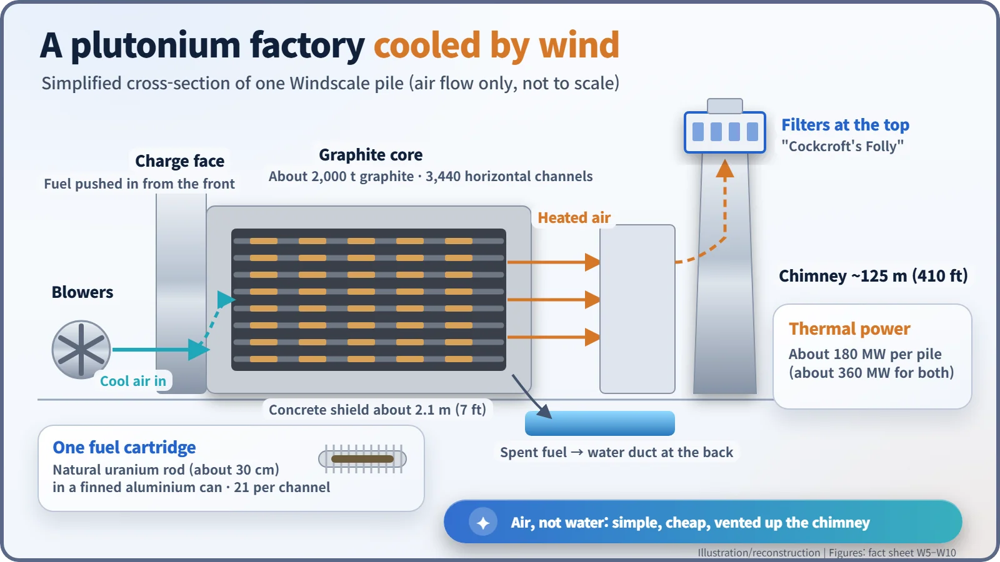
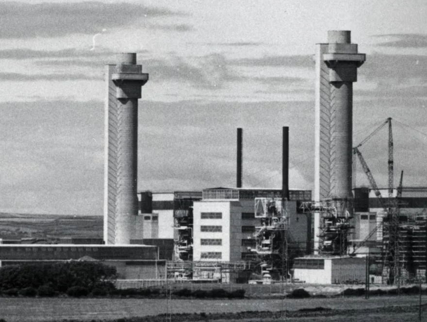

Nuclear History · 148
The "Folly" on Top of the Chimney — Harwell and the Windscale Piles, Britain's Twin Atomic Pillars (1946–1952)
A reactor in an aircraft hangar, a choice of air over water, and a box added to the top of a chimney laid the foundations of British nuclear energy.
Cut off from American atomic cooperation in 1946, Britain split its nuclear effort into two pillars: a research establishment in the hangars of a former airfield at Harwell, and a pair of air-cooled plutonium-production reactors at Windscale on the Cumbrian coast. Between GLEEP going critical in August 1947 and the first British plutonium in March 1952, those two pillars laid the foundations of British nuclear energy, including a set of chimney filters that engineers mocked as "Cockcroft's Folly".
Two chimneys wearing hats
For decades, two odd-looking chimneys stood on the Cumbrian coast of north-west England. Each rose about 125 m (410 ft), and each wore a bulky concrete box on its head, like a hat a size too big. The engineers who built them had a name for those boxes: "Cockcroft's Folly", a joke about an expensive add-on nobody thought was needed. Follow the story of the chimneys and their boxes, and you follow how Britain, left on its own after the war, built a nuclear programme from scratch. [1]
The door closes, so build two pillars
British scientists had been deeply involved in the Manhattan Project. But in August 1946 the US Atomic Energy Act, the McMahon Act, barred the sharing of nuclear information with other countries. From reactor design to plutonium production, Britain would have to do everything itself. [1]
Clement Attlee's government split the job in two. One pillar would do research and run experimental reactors; the other would design, build and operate the factories. The research pillar went to John Cockcroft (1897–1967), the physicist who in 1932 had split atomic nuclei with artificially accelerated protons and who ended the war running the Montreal Laboratory in Canada. The production pillar went to Christopher Hinton (1901–1983), an engineer seasoned in building chemical plants, who set up his headquarters at Risley in north-west England on 4 February 1946. [4] [5]

A reactor wakes up in an aircraft hangar
The research pillar took over a former airfield, RAF Harwell, south of Oxford. The Atomic Energy Research Establishment (AERE) was formally founded in January 1946, and its big aircraft hangars turned out to be ideal for housing reactors. Its director, though, had a Canadian programme to wind up first: Cockcroft only arrived at Harwell on 30 September 1946. [2] [4]
On 15 August 1947, inside one of those hangars, GLEEP (the Graphite Low Energy Experimental Pile) went critical, meaning that the chain reaction of fission sustained itself. It was the first reactor in Western Europe and, across all of Eurasia, second only to the Soviet F-1. Graphite slowed the neutrons and air carried away the heat; 11,500 natural uranium rods sat in 676 horizontal channels. Designed for 100 kW, it ran at 80 kW for about its first year and a half to make radioisotopes, and mostly at around 3 kW afterwards, about the heat of a couple of electric kettles. Yet this modest machine kept working until 1990, more than four decades. [3]
In July 1948 it was joined by BEPO, a 6 MW pile, and Harwell went on to operate 14 experimental reactors in all. [2] [7]

Water or air?
The production pillar's task was plutonium. When uranium-238, which makes up nearly all natural uranium, absorbs a neutron, two radioactive decays later it becomes plutonium-239. A uranium-235 enrichment plant was judged to cost about ten times as much for the same output of bomb material, so plutonium it was. [1]
The first plan copied the water-cooled reactors at Hanford in the United States. But a Hanford-sized reactor needed about 30 million imperial gallons, some 140 million litres, of water a day. Water also absorbs neutrons, and there was real concern about what would happen if the coolant were suddenly lost. Finding a site remote enough in crowded Britain was another headache. Engineers at Risley proposed fuel in finned cans cooled by air, and Harwell tested the idea. On Hinton's recommendation, work on water-cooled designs stopped in April 1947; he estimated that giving up water would cut costs by 40 per cent. [1]
The site chosen was a former Royal Ordnance Factory at Sellafield on the Cumbrian coast, renamed Windscale to avoid confusion with the nearby Springfields plant. Construction began in September 1947, and at its peak more than 5,000 workers were on site. [1]
Blowing wind through a wall of graphite
A Windscale pile ("pile" was the early word for a reactor, literally a stacked heap) was a block of about 2,000 tonnes of graphite pierced by 3,440 horizontal channels. Each channel held 21 cartridges: a natural uranium metal rod about 30 cm long sealed in a finned aluminium can. Workers pushed fresh fuel in at the front, the "charge face", and spent fuel was pushed out at the back into a water-filled duct. Blowers drove cool air through the channels, and the heated air went straight up the chimney. Each pile produced about 180 MW of heat. [1]

The box that went on after the chimney
This is where the "folly" comes in. Cockcroft learned that uranium oxide particles had been a problem at a reactor in Oak Ridge, and he insisted that the chimneys be fitted with high-performance filters. By then the first 70 ft (about 21 m) of Pile 1's chimney had already been built, so the filters had to go at the very top. Pushing air through them took extra blower power, costing about £3,000 a week, and Hinton even proposed taking them out. [1] [4]
Pile 1 went critical in October 1950 and Pile 2 in June 1951. On 28 March 1952 the first sample of British-made plutonium was recovered, and that plutonium went into Britain's first nuclear test in October of the same year. [1]

What the two pillars left behind
In October 1957 a fire broke out in Pile 1, and both reactors were shut down for good; that accident is a story of its own. It is worth noting, though, that the filters at the top are credited with catching much of the radioactive dust: an estimated 95 per cent, according to the UK Nuclear Decommissioning Authority. The physicist Terence Price later observed:
"the word folly did not seem appropriate after the accident."
In 1954 Harwell and Risley were brought together under the new UK Atomic Energy Authority, and Hinton's team went on to build the Calder Hall power reactors right next door to Windscale. Learn on experimental reactors, then use that experience to build production reactors: that twin structure was how British nuclear energy took its first steps. [2] [5]